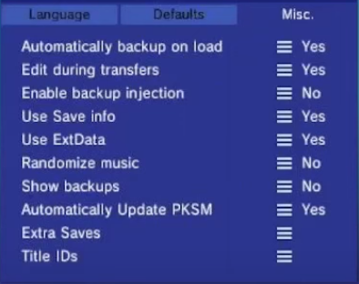
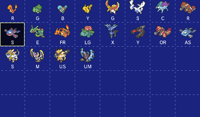

Using PKSM with generation 3 VC injects
PKSM is a very powerful tool that allows you to edit saves for generations 1-8. Ordinarily PKSM only detects cartridge and digital games seemingly making it impossible to use with the VC injects or any generation 3 games. However, PKSM has a feature that allows you to do this, and this guide will detail it.
What do I need?
- PKSM
- A generation 3 VC injection
Checking the game ID
You will need to know the title ID of your injection. We will see how to do this here.
- Open FBI
- Click
titles - All of your games will load in. Navigate to your VC injection
- The game ID will be displayed on the screen. Keep note of it
Registering the save
Here, you will register your save file so that it normally shows up with all of your other games in PKSM.
- Open PKSM
- Press
Yyou will be brought to a screen that looks like this  - Tap on
Title IDsyou will be brought to a screen that looks like this  - Select the icon for whatever game you're editing
- Once you've done that, a keyboard will popup. Input the title ID that you got earlier in here
- Press
Yand your game should be there!
Troubleshooting
Issue: Even when I register it, it's still not showing up
Answer: You need to have played the game and saved
Issue: Title ID not found
Answer: You entered the incorrect title id